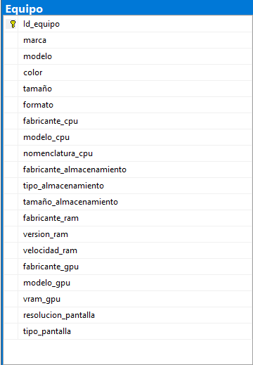

Diagrama de la tabla en la base de datos
Registrar las características técnicas de los equipos recibidos, mediante un sistema de inventario detallado, para identificar con precisión los dispositivos a reparar y dar seguimiento en órdenes de servicio dentro del taller.
La tabla Equipo está normalizada porque cumple con:
CREATE TABLE Equipo (
Id_equipo VARCHAR(50) PRIMARY KEY, -- Número serial único del equipo
marca VARCHAR(50) NOT NULL,
modelo VARCHAR(50) NOT NULL,
color VARCHAR(30),
tamaño VARCHAR(30),
formato VARCHAR(30),
fabricante_cpu VARCHAR(50),
modelo_cpu VARCHAR(50),
nomenclatura_cpu VARCHAR(50),
fabricante_almacenamiento VARCHAR(50),
tipo_almacenamiento VARCHAR(20) NOT NULL,
tamaño_almacenamiento VARCHAR(20) NOT NULL CHECK (tamaño_almacenamiento <> ''),
fabricante_ram VARCHAR(50),
version_ram VARCHAR(20) NOT NULL,
velocidad_ram VARCHAR(20) CHECK (velocidad_ram LIKE '%MHz'),
fabricante_gpu VARCHAR(50),
modelo_gpu VARCHAR(50),
vram_gpu VARCHAR(20) CHECK (vram_gpu LIKE '%GB' OR vram_gpu LIKE '%MB'),
resolucion_pantalla VARCHAR(30) CHECK (resolucion_pantalla LIKE '%x%'),
tipo_pantalla VARCHAR(30),
-- Restricciones para validar valores permitidos
CONSTRAINT chk_tipo_almacenamiento CHECK (tipo_almacenamiento IN ('HDD','SSD-SATA','SSD-NVME','SSD-2.5inch')),
CONSTRAINT chk_version_ram CHECK (version_ram IN ('DDR1','DDR2','DDR3','DDR4','DDR5',
'GDDR1','GDDR2','GDDR3','GDDR4','GDDR5','GDDR6','GDDR6X'))
);
INSERT INTO Equipo (
Id_equipo, marca, modelo, color, tamaño, formato,
fabricante_cpu, modelo_cpu, nomenclatura_cpu,
fabricante_almacenamiento, tipo_almacenamiento, tamaño_almacenamiento,
fabricante_ram, version_ram, velocidad_ram,
fabricante_gpu, modelo_gpu, vram_gpu,
resolucion_pantalla, tipo_pantalla
)
VALUES (
'EQP-0001', -- Id_equipo
'Dell', -- marca
'Inspiron 15', -- modelo
'Negro', -- color
'15.6 pulgadas', -- tamaño
'Laptop', -- formato
'Intel', -- fabricante_cpu
'Core i7-10750H', -- modelo_cpu
'i7-10750H', -- nomenclatura_cpu
'Western Digital', -- fabricante_almacenamiento
'SSD-NVME', -- tipo_almacenamiento
'512GB', -- tamaño_almacenamiento
'Corsair', -- fabricante_ram
'DDR4', -- version_ram
'3200MHz', -- velocidad_ram
'NVIDIA', -- fabricante_gpu
'GTX 1650 Ti', -- modelo_gpu
'4GB', -- vram_gpu
'1920x1080', -- resolucion_pantalla
'LED' -- tipo_pantalla
);